第9章 腹部血管
原书页 271–317 · 47 个页面区块 · 62 张配图。正文、图注与图片保持原书顺序。
| · AA | arcuat artery | 弓形动脉 |
| · Ao | aorta | 主动脉 |
| · AV | arcuat vein | 弓形静脉 |
| · B | bowel | 肠管 |
| · C | cortex | 皮质 |
| · CA | celiac artery | 腹腔动脉 |
| · CHA | common hepatic artery | 肝总动脉 |
| · CIA | common iliac artery | 髂总动脉 |
| · CIV | common iliac vein | 髂总静脉 |
| · Dia | diaphragm | 膈 |
| · EIA | external iliac artery | 髂外动脉 |
| · EIV | external iliac vein | 髂外静脉 |
| · IIA | internal iliac artery | 髂内动脉 |
| · IIV | internal iliac vein | 髂内静脉 |
| · ILA | interlobar artery | 叶间动脉 |
| · ILLA | interlobular artery | 小叶间动脉 |
| · ILLV | interlobular vein | 小叶间静脉 |
| · ILV | interlobar vein | 叶间静脉 |
| · IVC | inferior vena cava | 下腔静脉 |
| · LHV | left hepatic vein | 左叶静脉 |
| · LL | left liver | 左叶 |
| · LRV | left renal vein | 左肾静脉 |
| ·M | medulla | 髓质 |
| ·MHV | medium hepatic vein | 中叶静脉 |
| ·P | pancreas | 胰腺 |
| ·RHV | Right hepatic vein | 右叶静脉 |
| ·RK | Right kidney | 右肾 |
| ·RL | Right liver | 肝右叶 |
| ·RRA | Right renal artery | 右肾动脉 |
| ·RRV | Right renal vein | 右肾静脉 |
| ·S | sinus | 肾窦 |
| ·SA | segmental artery | 段动脉 |
| ·SMA | superior mesenteric artery | 肠系膜上动脉 |
| ·SMV | superior mesenteric vein | 肠系膜上静脉 |
| ·Sp | spine | 脊柱 |
| ·SPV | splenic vein | 脾静脉 |
| ·SV | segmental vein | 段静脉 |
第一节 动脉系统
一、 腹主动脉
（一） 腹正中腹主动脉长轴矢状面（图9-1）
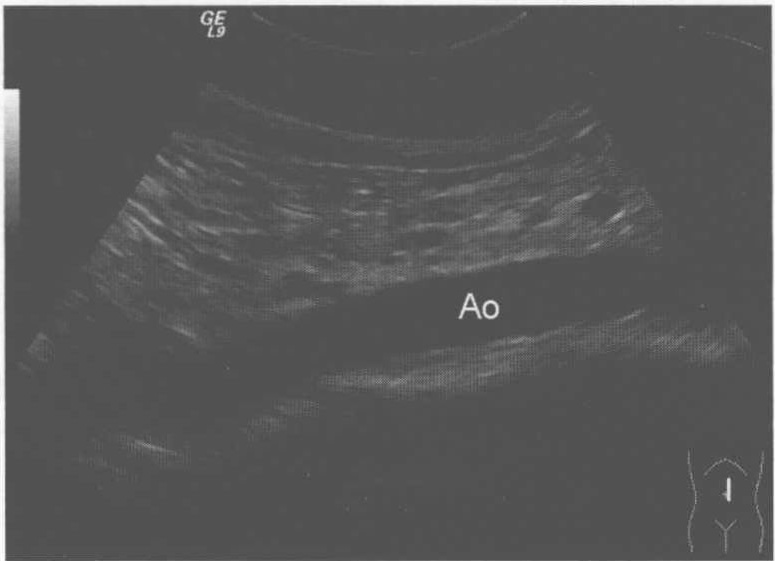
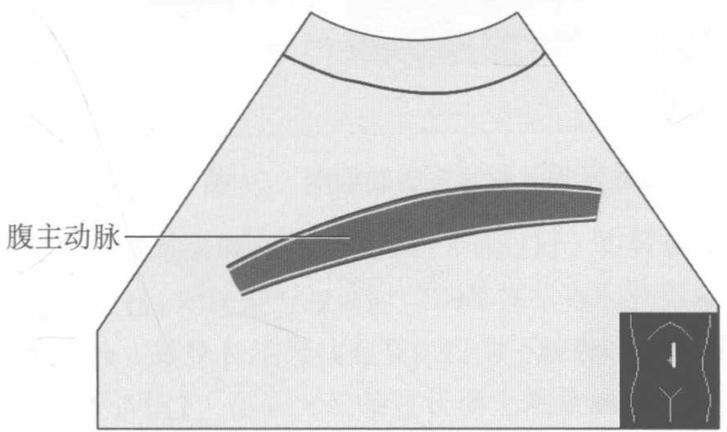
图9-1 腹正中腹主动脉长轴矢状面
【扫查方法】禁食8h以上，受检者仰卧位，在腹正中线偏左1～2cm处连续性纵切扫查。
【断面结构】腹主动脉长轴矢状面，从上到下管径逐渐变细，可见管壁的搏动。
【测量方法及正常值】腹主动脉显示清晰者可显示动脉壁为三层结构。在最大矢状切面上测量腹主动脉前后径，测量方法为从一侧管壁外缘到对侧管壁外缘；腹主动脉管径自上而下均匀性变小，男性大于女性，腹主动脉下段管径的正常值为：男性 2.0 ± 0.25 cm，女性 1.7 ± 0.15 cm。管腔内径的测量方法为一侧壁的内膜与管腔界面至对侧壁的内膜与管腔界面之间的距离。如有管腔狭窄，计算狭窄率，狭窄率 = （血管内径 - 狭窄处最小内径）÷ 血管内径。
【临床价值】此切面可观察腹主动脉长轴矢状面的全长，前后径是否有扩张或狭窄，管径较正常值扩张达 50% 以上可诊断动脉瘤；管径增大 < 50% 时称为动脉扩张。动脉瘤形成后需定期监测其大小。观察管壁的结构改变，大动脉炎累及腹主动脉时，可见管壁增厚，内径减小；动脉粥样硬化斑块形成的患者，内膜 - 中层常不均匀增厚且回声改变。
（二） 侧腰部腹主动脉长轴冠状面（图9-2）
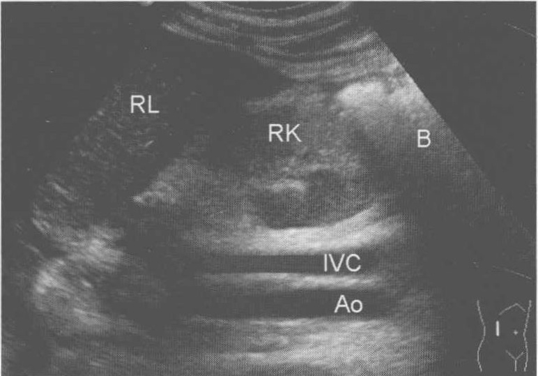
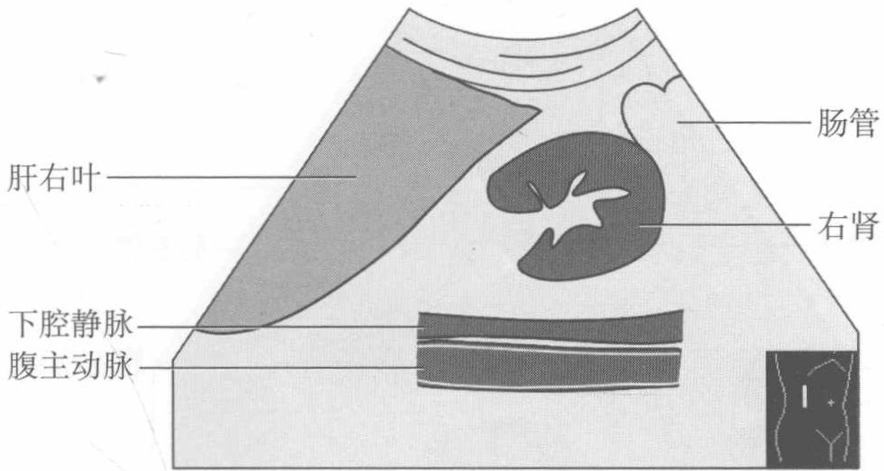
图9-2 侧腰部腹主动脉长轴冠状面
【扫查方法】患者可采取左或右侧卧位，通过肝、右肾或脾、左肾作为透声窗，从前到后进行扫查；动脉走行扭曲时需调整探头方向获得真正的动脉长轴切面。【断面结构】腹主动脉长轴冠状面及伴行的下腔静脉长轴冠状面。
【测量方法及正常值】 在最大长轴冠状面上测量腹主动脉左右径，测量方法为从一侧管壁外缘到对侧管壁外缘。腹主动脉下段管径的正常值为：男性 2.02±0.25cm，女性 1.7±0.15cm。
【临床价值】此切面主要用于因过度肥胖、腹胀及大量腹水而导致腹主动脉探查困难，常规探测方法难以清晰显示腹主动脉者，可在此切面观察腹主动脉长轴管壁及管腔情况，同时观察下腔静脉的管腔及血流情况。
【附注】腹主动脉管径的测量存在一定误差，且主动脉管径越大，测量误差越大，0.5cm以下的差异一般认为无统计学意义，在各测量值中，以长轴矢状面的前后径测值最为准确。
（三） 腹正中腹主动脉横切面（图9-3）
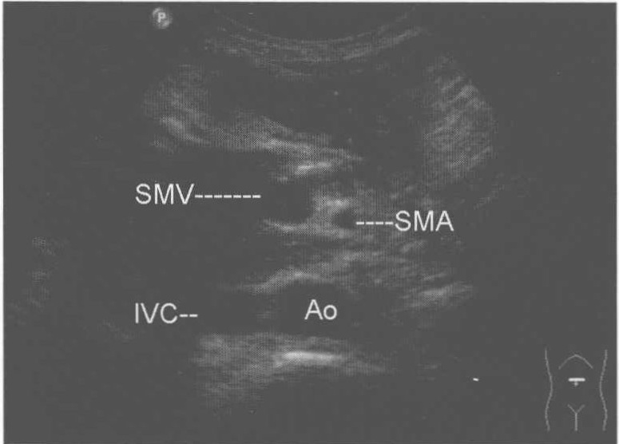
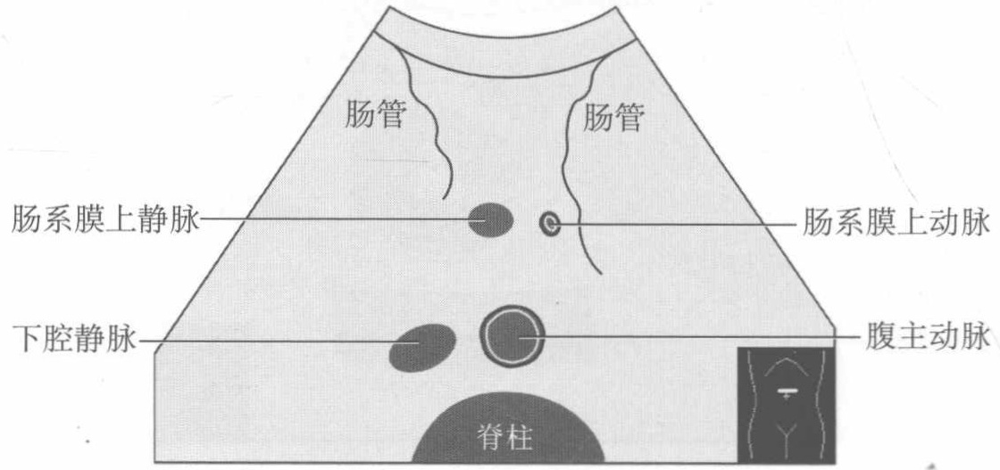
图9-3 腹正中腹主动脉横切面
【扫查方法】常规检查应取仰卧位，在腹正中线连续性横切扫查。
【断面结构】腹主动脉、下腔静脉肠系膜上动脉及肠系膜上静脉横切面。
【测量方法及正常值】在横切面上测量腹主动脉前后径及左右径，测量方法均为从一侧管壁外缘到对侧管壁外缘；腹主动脉显示清晰者可显示动脉壁的三层结构。
【临床价值】此切面可观察腹主动脉横切面的全长，通过连续扫查和测量可确定不同病因导致的管径扩张或狭窄，观察动脉粥样硬化斑块，测量残余管腔的大小。
【附注】 超声测量的轴向分辨率优于侧向分辨率，因此横切面上前后径测量的误差较左右径测量误差小。前后径和左右径中，以测值大者作为腹主动脉管径。对于残余管腔的测量，横切面与纵切面测量误差均较大，结合彩色多普勒超声有助于减小误差，相对而言，横切面的测值较纵切面准确。
（四） 腹主动脉彩色多普勒血流图（图9-4）
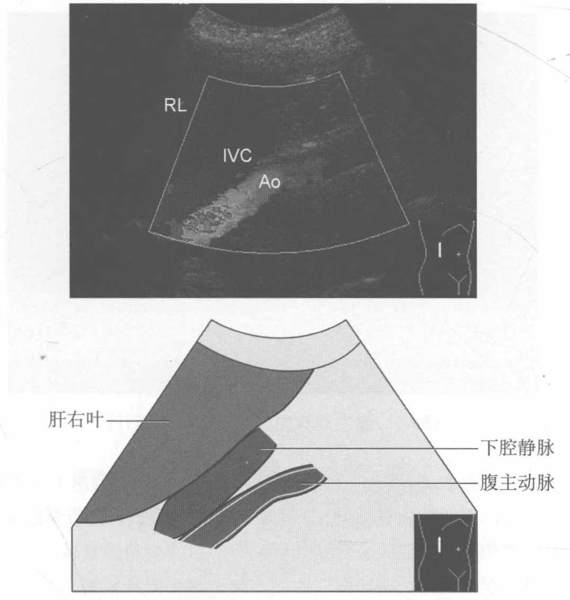
图9-4 腹主动脉彩色多普勒血流图（见彩图30）
【扫查方法】禁食8h以上，受检者仰卧位，在腹正中线偏左1～2cm处连续纵切扫查。在显示腹主动脉二维图像后，采用彩色多普勒观察，检查时需进行增益、流速及滤波的调节。纵切观察时，如声束血流夹角过大影响血流显示，可在探头尾侧加压。
【断面结构】腹主动脉长轴冠状面及伴行的下腔静脉长轴冠状面。腹主动脉长轴切面，血流方向为由头侧到尾侧，充满整个管腔，中心血流明亮，近管壁处血流较黯淡；冠状面和横切面上显示腹主动脉和下腔静脉血流方向相反。
【临床价值】 通过彩色血流图对腹主动脉血流进行大致观察，确定有无局限性或弥漫性的管腔狭窄，狭窄段血流束变细，严重时狭窄处可见杂色血流，彩色多普勒有助于确定狭窄部位和狭窄处血流方向。对于回声很低的斑块和动脉瘤内的附壁血栓，彩色多普勒的观察有助于确定病变的厚度和对残余管腔进行准确测量。
（五） 腹主动脉血流频谱（图9-5）
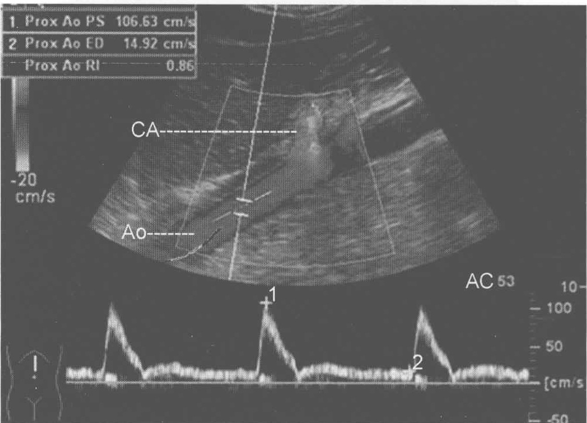
图9-5 腹主动脉血流频谱（见彩图31）
【扫查方法】禁食8h以上，受检者仰卧位，在腹正中线偏左1～2cm处连续纵切扫查。显示腹主动脉长轴后，采用彩色多普勒观察，调节至血流显示良好，进行频谱多普勒检查。探头应尾侧加压使声束血流夹角尽量减小。
【测量方法及正常值】腹主动脉血流频谱在收缩期上升陡直、频带较窄，有清晰的频窗，形态随部位不同而有差别，近段频谱显示舒张期有一定程度的正向血流，远段频谱显示舒张早期有一反向波。峰值流速（PSV）尚无一定的公认标准，文献报道在50～110cm/s，从近端到远端流速略降低。
【断面结构】腹主动脉长轴切面，血流方向为由头侧到尾侧。
【临床价值】腹主动脉狭窄时，狭窄段 PSV 增高，远段 PSV 减低，且频谱显示远段收缩期加速度减小，加速时间延长，频谱圆钝。计算肾动脉与腹主动脉峰值流速比值（RAR）时，腹主动脉的 PSV 测量位置为肠系膜上动脉开口远端 1cm 处。
二、 腹腔动脉
（一） 腹腔动脉长轴矢状切面（图9-6）
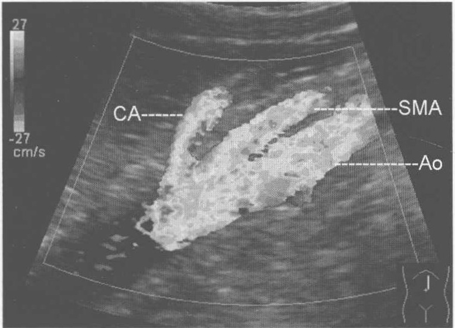
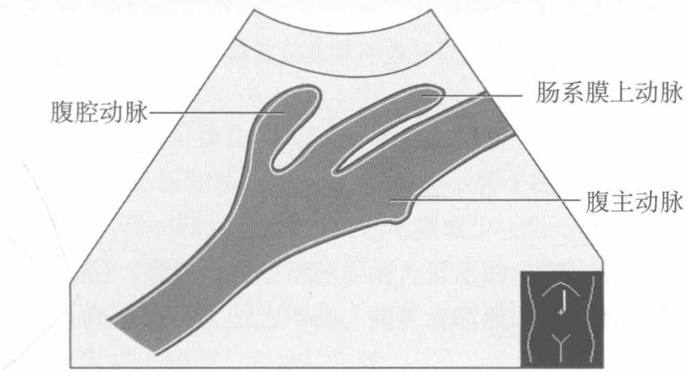
图9-6 腹腔动脉长轴矢状切面（见彩图32）
【扫查方法】一般检查前应禁食8h以上，患者仰卧位，探头纵置于剑突下中线偏左1～2cm处，显示腹主动脉长轴后，可见腹腔动脉起始于腹主动脉前壁，为腹主动脉的第一分支。腹胀、肥胖患者检查时需适当加压。
【断面结构】腹腔动脉，腹主动脉，肠系膜上动脉，肝脏左叶。
【测量方法及正常值】在此切面可测量腹腔动脉起始段管径，一般为 0.79±0.19cm，主干长度为0.5～3cm。正常腹腔动脉内为层流。
【临床价值】 腹腔动脉狭窄多位于起始段。在此切面上可测量腹腔动脉起始段管径，观察管壁回声是否正常，测量残余管腔直径，彩色多普勒血流图可为诊断管腔狭窄提供依据，狭窄处呈杂色血流信号。如有闭塞，闭塞段管腔内无血流信号。
【附注】由于腹腔动脉位置较深，超声常难以显示动脉壁厚度及结构，因此难以准确测量动脉内径和狭窄时残余管腔，对于动脉狭窄的诊断以频谱峰值流速测量为主。
（二） 腹腔动脉脉冲多普勒频谱（图9-7）
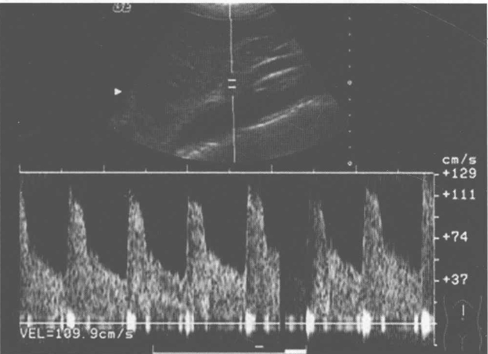
图9-7 腹腔动脉脉冲多普勒频谱
【扫查方法】一般检查前应禁食8h以上，患者仰卧位，探头纵置于剑突下中线偏左1～2cm处，显示腹腔动脉长轴后，取样容积置于距起始部0.5～1.0cm处管腔中央，肥胖患者检查时需适当加压，尽量减少呼吸干扰。
【测量方法及正常值】禁食时腹腔动脉血流为低阻的二相波型，具有较高的舒张期血流，餐后流速减低且阻力增高。超声诊断显著狭窄的主要参数为峰值流速，因此测量时应准确调节角度校正线。
【临床价值】 腹腔动脉无症状性狭窄的发生率约为22%，内径减少70%以上的腹腔动脉狭窄的诊断标准为峰值流速大于200cm/s，同时频谱形态改变，表现为频窗消失，频谱充填。
（三） 腹腔动脉变异（图9-8）
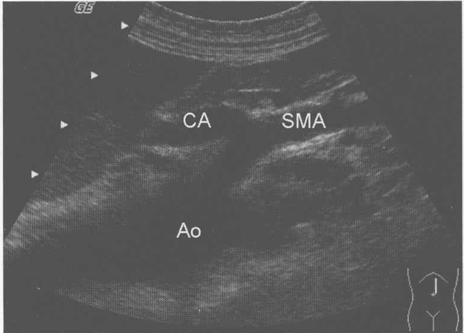
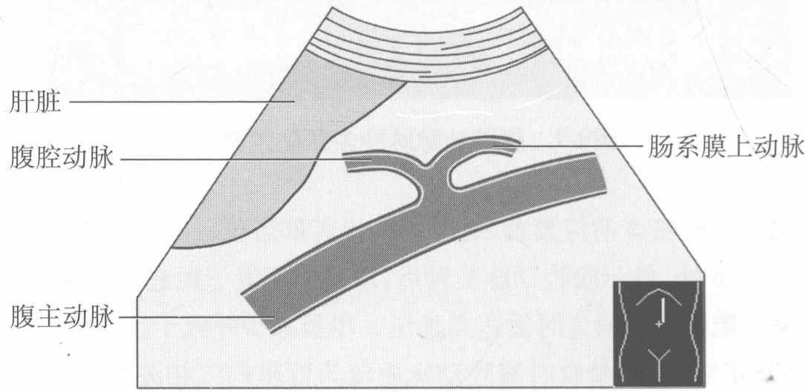
图9-8 腹腔动脉变异
【扫查方法】一般检查前应禁食8h以上，患者仰卧位，探头纵置于剑突下中线偏左1～2cm处，显示腹主动脉长轴后，可见腹腔动脉起始于腹主动脉前壁，为腹主动脉的第一分支。腹胀、肥胖患者检查时需适当加压。
【断面结构】腹主动脉，腹腔动脉，肠系膜上动脉。显示腹腔动脉与肠系膜上动脉共干起自腹主动脉。
【临床价值】不到1%的正常人可见腹腔动脉与肠系膜上动脉共干起自腹主动脉。如果肠系膜上静脉异位起源于腹腔动脉，腹腔动脉严重狭窄时可引起肠系膜缺血症状。
（四）剑突下肝总动脉及脾动脉长轴断面（图9-9）
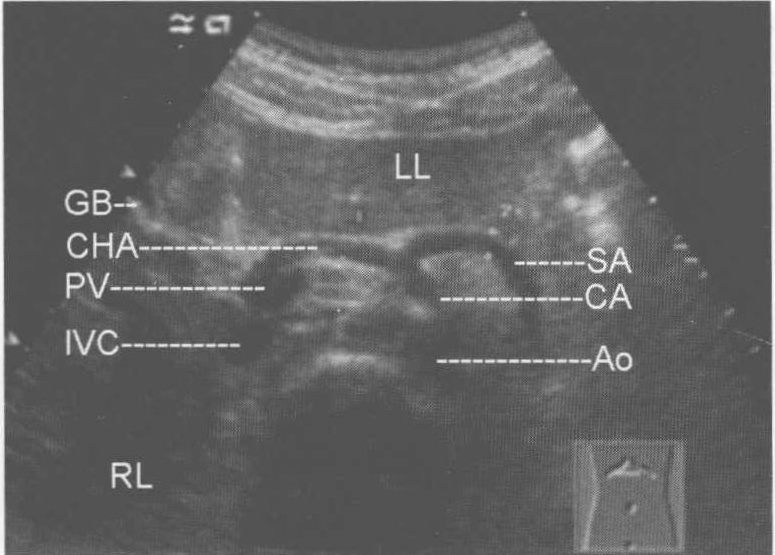
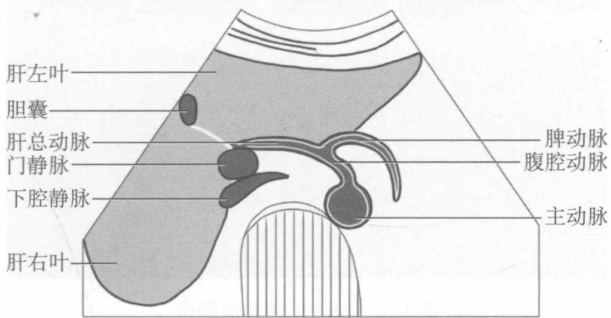
图9-9 剑突下肝总动脉及脾动脉长轴断面
【探查方法】一空腹8～12h，平卧位，探头横置于剑突下。在显示胰腺横断面后探头略向上扫查于胰腺上缘声束指向后上方，显示肝动脉及脾动脉长轴断面。
【断面结构】肝总动脉及脾动脉长轴断面，胰腺上缘横断面。腹主动脉及下腔静脉的横断面。
【测量方法及正常值】测肝总动脉及脾动脉内径及血流速度。正常值：肝总动脉管径 0.42 ± 0.24 cm，脾动脉管径 0.48 ± 0.26 cm。
【临床价值】 ①在肝移植患者，用此断面观察肝动脉管腔是否通畅，有无吻合口狭窄或血栓形成；②在原发性肝癌、门静脉阻塞性疾病如门静脉血栓或癌栓，肝动脉均呈代偿性增粗，血流速度明显加快；③在脾肿大的病人，脾动脉血流速度明显加快；④在此断面，可以显示上腹部腹膜后有无淋巴结肿大。
这些淋巴结一般位于腹腔动脉、肝动脉或脾动脉的周围。
【附注】 肝动脉有75%~77%为正常从腹腔动脉发出，但有23%~25%为异位起源，称为迷走肝动脉。最常见的为起源于肠系膜上动脉，为10.7%~11.1%，其次为起源于胃左动脉。如果肝脏没有其他动脉供应时，此种异位起始的肝动脉便称为代替动脉。
（五） 肝总动脉血流频谱（图9-10）
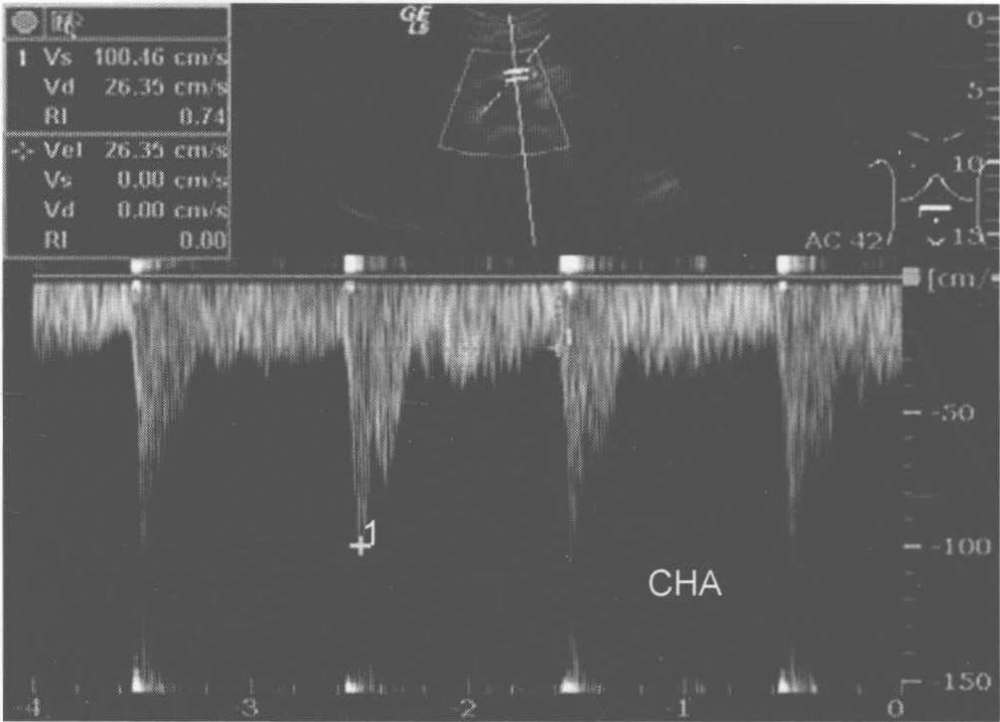
图9-10 肝总动脉血流频谱
【探查方法】 空腹 8～12h，平卧位，于剑突下肝总动脉长轴断面处取血流频谱，声束和血流束间的夹角小于 60°。
【测量方法及正常值】脉冲多普勒显示血流频谱，测血流速度及阻力指数。正常值： 91.1 ± 24.9 cm/s，阻力指数较低。
（六） 剑突下肝固有动脉长轴断面（图9-11）
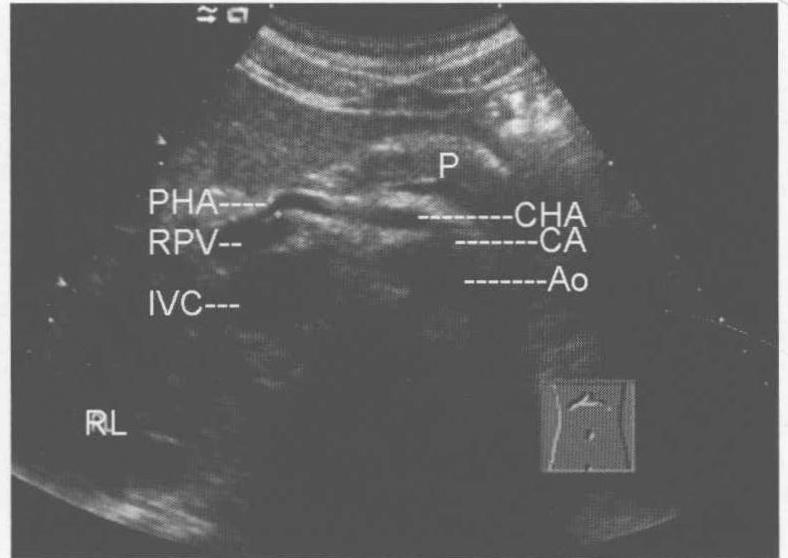
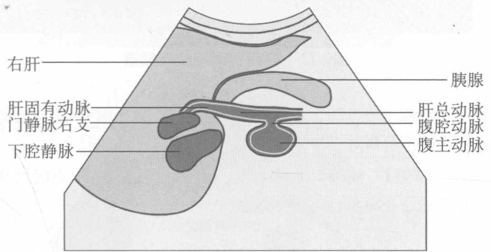
图9-11 剑突下肝固有动脉长轴断面
【探查方法】空腹8～12h，探头置于剑突下，在显示肝总动脉长轴断面后，向上追踪，在胰头的外侧，肝总动脉分出胃十二指肠动脉后，移行为肝固有动脉。【断面结构】第一肝门部，肝固有动脉长轴断面。肝固有动脉自肝总动脉分出，经肝十二指肠韧带上行到第一肝门附近，在此分成肝左右动脉。
【测量方法及正常值】 测肝固有动脉内径。正常值： 0.33 ± 0.07 cm。脉冲多普勒在此断面显示血流频谱，测血流速度。
【临床价值】①在肝移植病人，用此断面观察肝固有动脉管腔是否通畅，有无吻合口狭窄、动脉瘤或血栓形成；②在原发性肝癌、门静脉阻塞性疾病如门静脉血栓或癌栓、门静脉高压等，肝固有动脉均呈代偿性增粗，血流速度明显加快；③可以显示肝门部有无淋巴结肿大。
（七） 肝固有动脉血流频谱（图9-12）
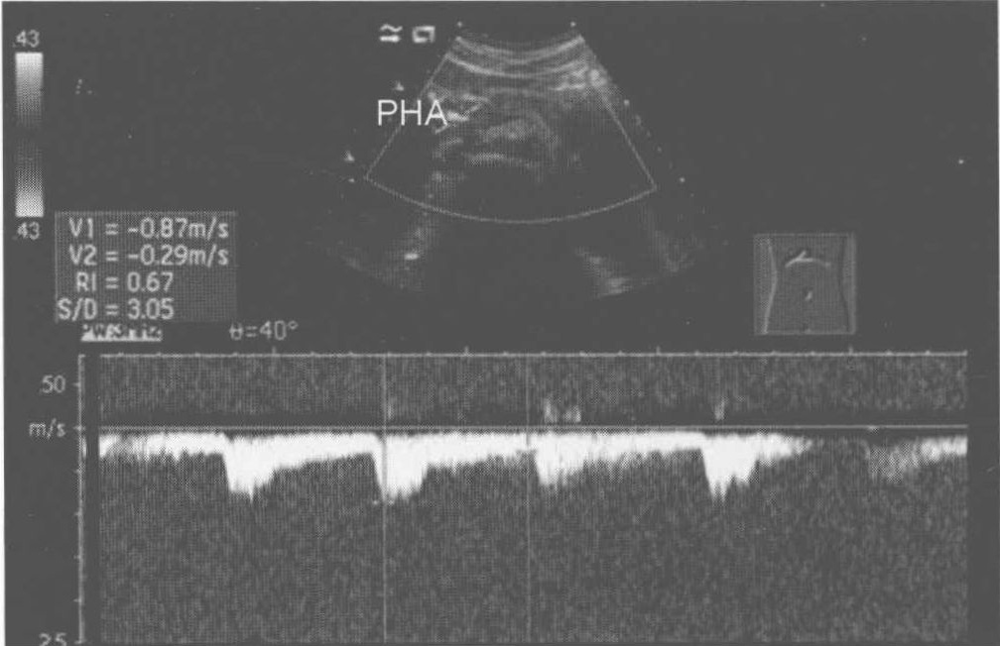
图9-12 肝固有动脉血流频谱
【探查方法】 空腹 8～12h，平卧位，于第一肝门肝固有动脉处取血流频谱，声束和血流束间的夹角应小于 60°。
【测量方法及正常值】测最大血流速度、平均血流速度、阻力指数及搏动指数。最大血流速度 82.2 ± 20.8 cm/s。
三、 肠系膜上动脉
（一） 肠系膜上动脉起始段横切面（图9-13）
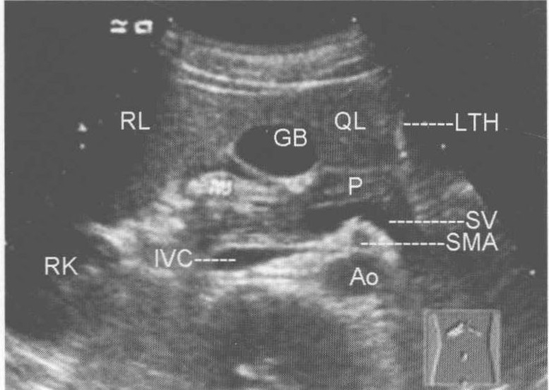
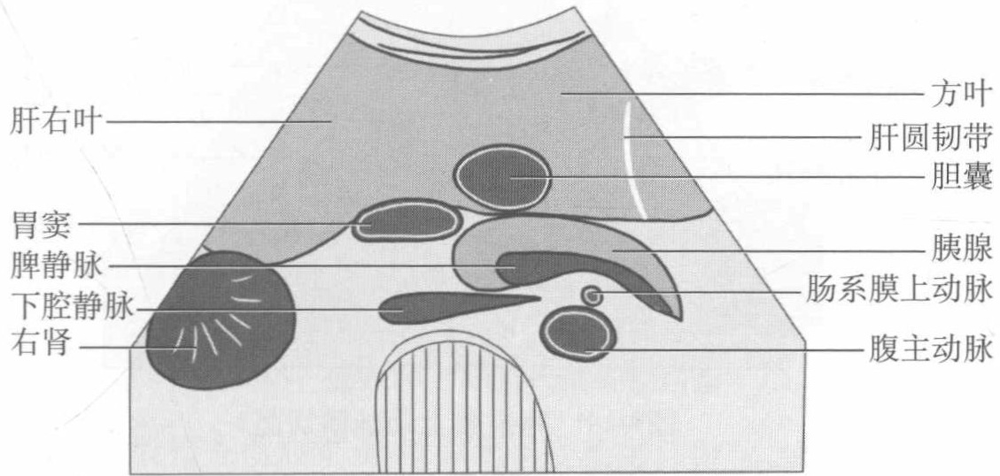
图9-13 肠系膜上动脉起始段横切面1
【扫查方法】一般检查前应禁食8h以上，是受检者仰卧位，探头横置于剑突下，显示胰腺横断面后，向下扫查，在胰腺后方观察。腹胀、肥胖患者检查时需适当加压。
【断面结构】肠系膜上动脉、腹主动脉及下腔静脉横断面，胰腺横断面，脾静脉及左肾静脉长轴断面。
【测量方法】在此断面测肠系膜上动脉内径。
【临床价值】在此切面有利于定位肠系膜上动脉，在此基础上进行肠系膜上动脉的长轴扫查。
（二） 肠系膜上动脉横切面（图9-14）
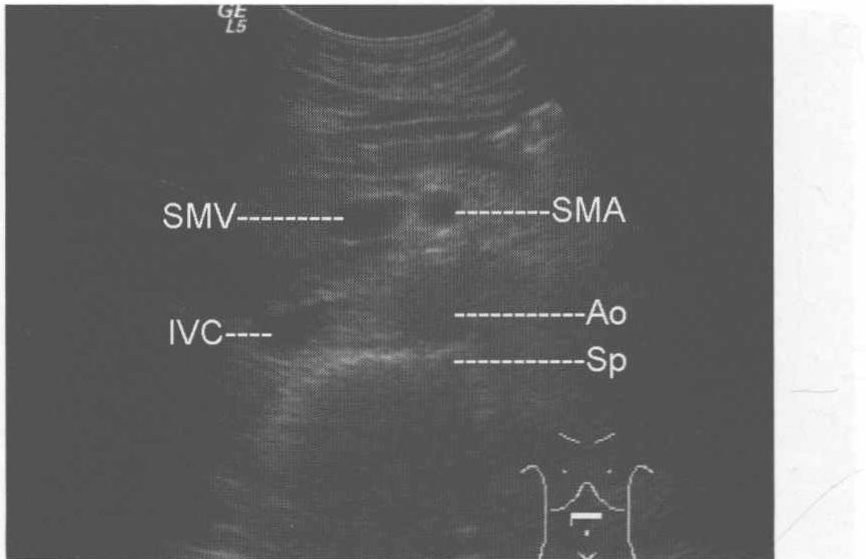
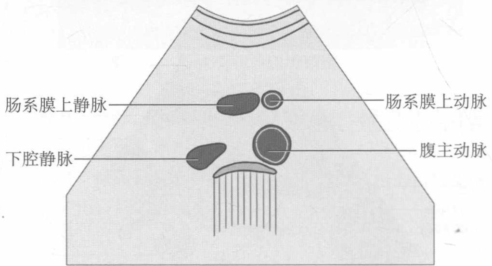
图9-14 肠系膜上动脉横切面2
【扫查方法】 探头横置于剑突下，在显示肠系膜上动脉起始段横切面后，探头向下移扫查。
【断面结构】显示肠系膜上动脉和肠系膜上静脉伴行的横切面。
【测量方法】 在此断面测肠系膜上动静脉内径。
【临床价值】 在此切面有利于定位肠系膜上动脉，在此基础上进行肠系膜上动脉的长轴扫查。
（三） 肠系膜上动脉长轴矢状切面（图 9-15）
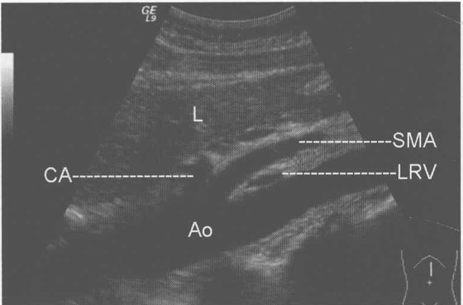
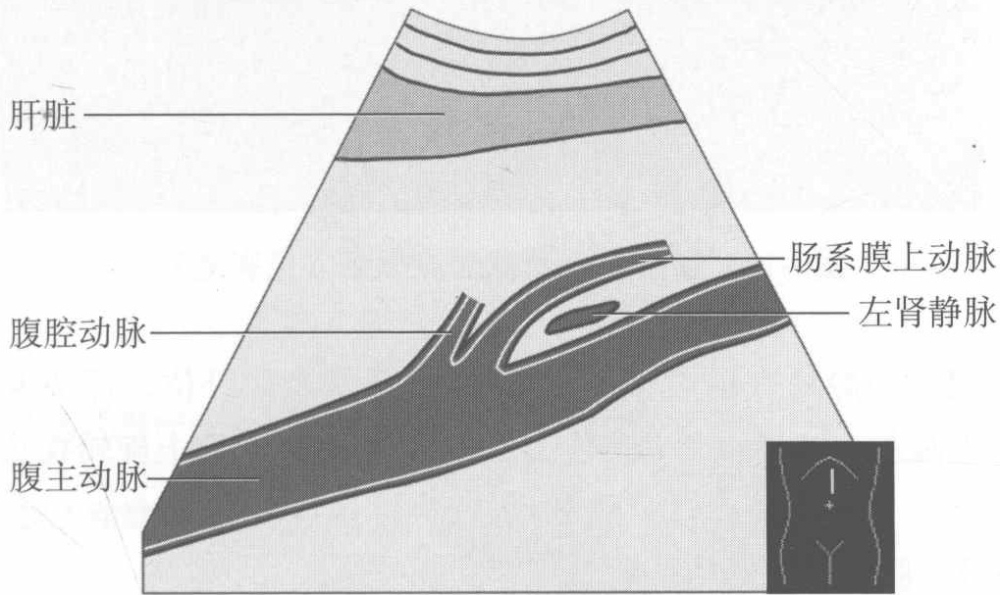
图9-15 肠系膜上动脉长轴矢状切面
【扫查方法】一般检查前应禁食8h以上，受检者仰卧位，探头置于剑突下，沿腹正中线偏左1～2cm处纵切扫查；或在横切面基础上旋转探头获得长轴切面。【断面结构】肠系膜上动脉，腹腔动脉，腹主动脉，左肾静脉，肠系膜上动脉起始部上缘距离腹腔动脉开口处下缘1～6mm。
【测量方法及正常值】在此切面测量肠系膜上动脉起始段管径，约0.77cm，进食后可增宽；还可测量肠系膜上动脉与腹主动脉夹角，正常为 40°∼60°。
【临床价值】 动脉粥样硬化患者累及肠系膜上动脉时可见管壁上的斑块样强回声以及血流束狭窄和射流；肠系膜上动脉闭塞时在此切面管腔内无血流显示。肠系膜上动脉与腹主动脉夹角过小也可压迫十二指肠横部引起有助于诊断肠系膜上动脉压迫综合征也可以压迫左肾静脉引起左肾静脉压迫综合征即“胡桃夹”现象。腹膜后肿物可将肠系膜上动脉抬高，使二者夹角增大，有助于确定肿物是否来源于腹膜后。
（四） 肠系膜上动脉血流频谱（图9-16）
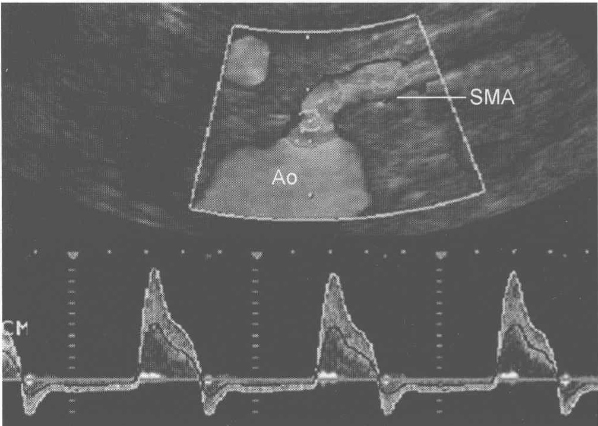
图9-16 肠系膜上动脉血流频谱（见彩图33）
【扫查方法】一般检查前应禁食8h以上，受检者仰卧位，探头置于剑突下，沿腹正中线偏左1～2cm处纵切扫查；或在横切面基础上旋转探头获得长轴切面。
【断面结构】肠系膜上动脉长轴，腹主动脉长轴。
【测量方法及正常值】 测量位置为肠系膜上动脉起始段，超声诊断显著狭窄的主要参数为峰值流速，因此测量时应准确调节角度校正线。如有狭窄则测量狭窄段射流最明显处。禁食后肠系膜上动脉频谱为三相波型，峰值流速 119.6±22.8cm/s。餐后肠系膜上动脉峰值流速明显增加，餐后45min，峰值流速可增加至基础值2倍左右，频谱反向波消失。
【临床价值】肠系膜上动脉狭窄患者，禁食时狭窄处峰值流速明显高于正常人，舒张早期反向波消失，肠系膜上动脉70%以上狭窄的诊断标准为峰值流速 ≥275cm/s。餐后狭窄处峰值流速增高不明显。
【附注】肠系膜上动脉狭窄小于70%时通常无明显临床表现，且不会导致流速的明显升高。肠系膜缺血的最重要表现为动脉峰值流速增高，波形分析、舒张期血流改变、餐前餐后血流改变等指标的临床价值有限。腹主动脉与肠系膜上动脉流速比值临床意义不大。
四、 肾动脉
（一） 腹正中横切面显示双肾动脉主干（图9-17）
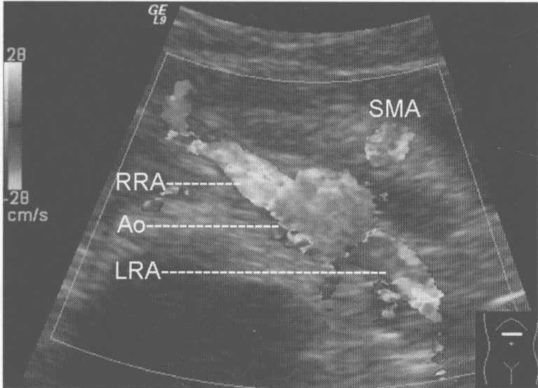
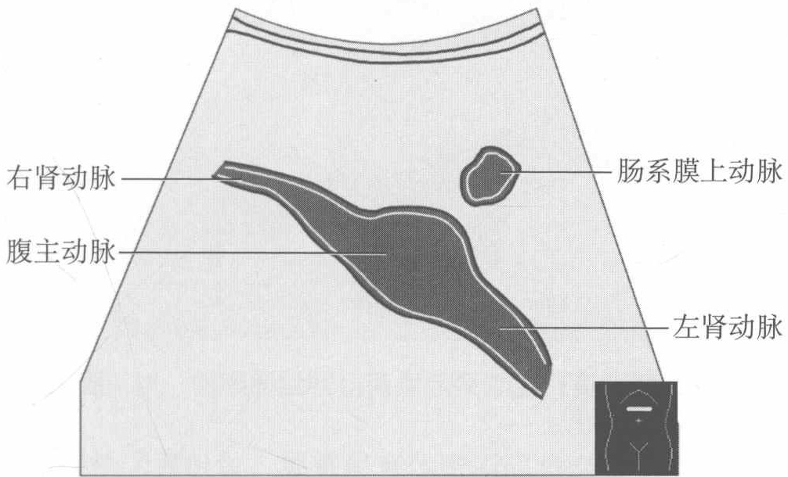
图9-17 腹正中横切面显示双肾动脉主干（见彩图34）
【扫查方法】 空腹，采用2.5～3.5MHz探头。患者仰卧位，探头置于上腹部。纵切显示肠系膜上动脉起始部后，探头转为横切，向足侧移动，在肠系膜上动脉起始部远端1～2cm处腹主动脉侧壁可显示双侧肾动脉开口，然后进一步观察肾动脉主干；或先显示肾静脉长轴和下腔静脉横切面后，在其后方寻找肾动脉。探头应适当加压，并采用交叉探测的方法（从腹主动脉一侧探测对侧肾动脉），减小声束血流夹角。
【断面结构】腹主动脉横切面，左、右肾动脉长轴，肠系膜上动脉横切面。
【测量方法及正常值】此切面可测量双侧肾动脉管径，正常为4～7mm；可同时显示双侧肾动脉血流充盈情况，正常应为层流；如声束血流夹角可调整至小于 60°，可在此切面进行频谱测量。
【临床价值】肾动脉狭窄时可见狭窄段杂色（彩色混叠）血流，流速增高，动脉粥样硬化引起的肾动脉狭窄常累及起始段。
【附注】此切面常因肾动脉近段声束血流夹角过大导致血流信号充盈欠佳及流速测值偏大。
（二） 侧腰部冠状切面显示肾动脉（图9-18）
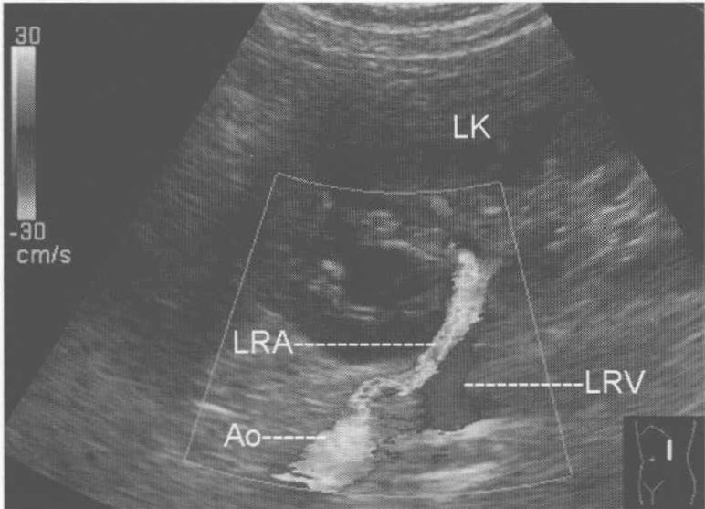
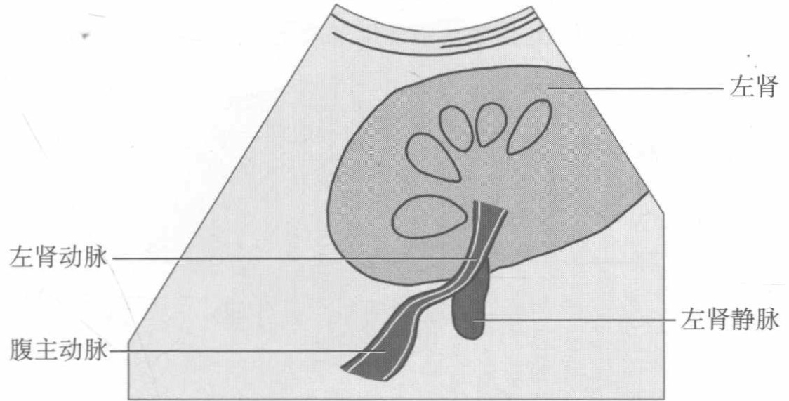
图9-18 侧腰部冠状切面显示肾动脉（见彩图35）
【扫查方法】受检者侧卧位，根据患者体型不同将探头置于腋前、腋中、腋后线肋间或第12浮肋下，冠状切面上以肾脏为透声窗显示肾动脉全长，可先显示腹主动脉，在其侧壁找到肾动脉开口后顺血流方向追踪肾动脉，也可在肾门处找到肾动脉，逆血流方向追踪至其起始部。
【断面结构】肾冠状面，肾动脉，腹主动脉，肾静脉，肾内各级动脉分支。
【测量方法及正常值】此切面可测量肾动脉管腔，内径正常为4～7mm；可显示一侧肾动脉血流充盈情况，正常应为层流；如声束血流夹角调整至小于 60°，可在此切面进行频谱测量。
【临床价值】在此切面上声束血流夹角较小，流速测量较准确，主要观察肾动脉主干血流及频谱测量。肾动脉狭窄时狭窄段呈杂色血流，流速增高。此切面也可显示双肾静脉，急性血栓形成时静脉管径增宽，内充满低回声，血流信号消失。
（三） 右肋缘下横切面显示右肾动、静脉（图9-19）
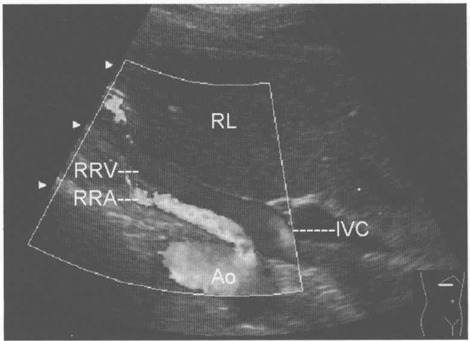
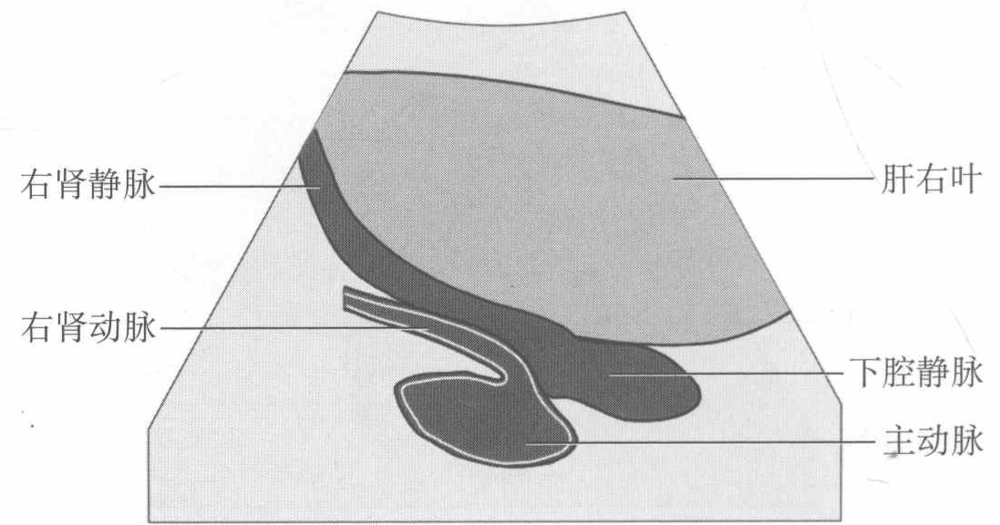
图9-19 右肋缘下横切面显示右肾动、静脉长轴彩色血流图（见彩图36）
【扫查方法】 患者仰卧位或左侧卧位，探头横置于右前腹肋间或肋缘下，声束指向正后方、后上方或后下方，在下移的肝脏后方寻找右肾静脉和下腔静脉，进一步在其后方寻找右肾动脉长轴断面和腹主动脉横断面，部分人还能同时显示左肾动脉近段。
【断面结构】 肝脏，右肾动脉，右肾静脉，右肾横切面，腹主动脉，下腔静脉；左肾动脉有时可同时显示。
【测量方法及正常值】此切面可测量右肾动脉管径，正常为4～7mm；如声束血流夹角调整至小于 60°，可在此切面进行频谱测量。
【临床价值】此横切面充分利用肝脏作透声窗，可使右肾动脉全程清晰显示，可较好地显示肾动脉的血流充盈情况，有时还可观察动脉管壁的结构，有助于采用形态学指标来诊断肾动脉疾病。此切面的声束血流夹角较小，流速测量较准确。但此方法对左肾动脉探测帮助不大。此切面也可显示右肾静脉全长，有助于静脉血栓的诊断。
（四） 双肾冠状切面观察并测量肾内动脉分支（图9-20）
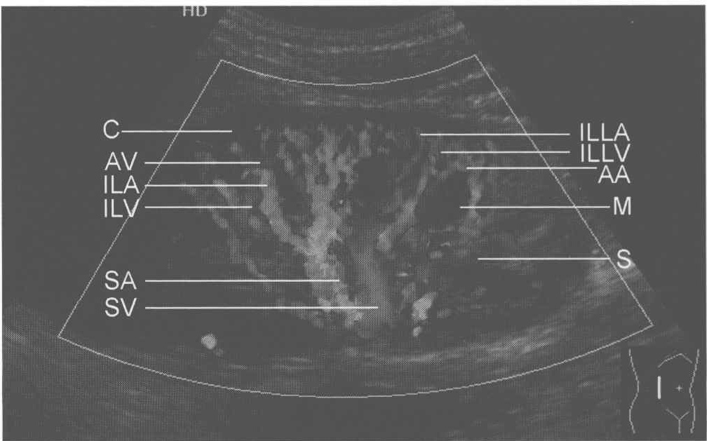
图9-20 双肾冠状切面观察并测量肾内动脉分支（见彩图37）
【扫查方法】受检者侧卧位，探头置于侧腰部，调整探头显示肾脏最大冠状切面。
【断面结构】 肾冠状面，肾内动脉各级分支（段动脉、叶间动脉、弓形动脉、小叶间动脉）。
【测量方法及正常值】 正常情况下肾内动脉各级分支显示清晰，呈树状分布，均匀分布于肾脏各部分。
【临床价值】肾动脉主干闭塞时肾内无血流信号显示，慢性期肾脏缩小；肾动脉分支闭塞时可见肾脏局部血流信号缺失。肾静脉主干栓塞时，急性期肾内静脉血流信号消失，动脉分支阻力增高，肾脏增大；侧支建立后无明显改变；肾静脉分支栓塞，可见肾内局限性静脉血流信号缺失。肾动脉主干严重狭窄时，肾内血流信号分布稀疏，颜色黯淡，肾内动脉分支频谱可呈小慢波表现。慢性肾功能不全患者肾内血流信号分布常较稀疏。
（五） 正常肾动脉主干及其分支的典型血流频谱（图9-21）
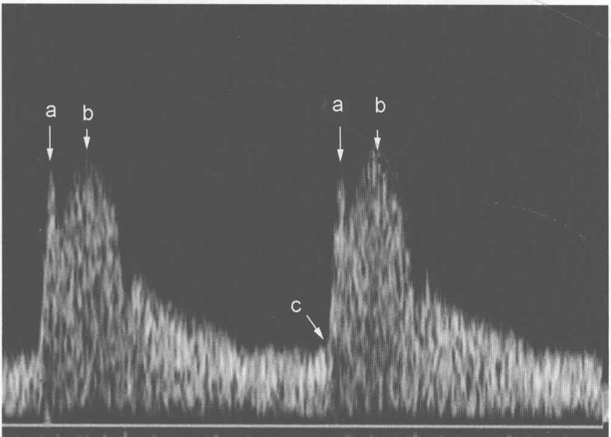
图9-21 正常肾动脉主干及其分支的典型血流频谱
【扫查方法】峰值流速是诊断肾动脉疾病的重要参数，而肾动脉狭窄多发生于起始段，因此最好在右前腹肋间或肋缘下横切，或侧腰部冠状切面记录峰值流速。注意取样线应与射流方向一致而不是与血管壁平行。
【断面结构】 肾动脉典型频谱的特点为低阻型，具有早期收缩峰（a）和晚期收缩峰（b）。
【测量方法及正常值】以频谱的最高点为峰值流速的测量点（b），阻力指数测量点为b点和舒张末期（c），c点和早期收缩峰顶点（a）为测量收缩早期加速度（AC）和收缩早期加速时间（AT）的起止点。正常成年人肾动脉峰值流速＜100cm/s；RI正常为0.55～0.70。收缩早期加速度（AC）＞3m/s，加速时间（AT）＜0.07s。
【临床价值】 一般认为峰值流速≥180cm/s 及 RAR（肾动脉腹主动脉峰值流速比值）≥3.5 可用于诊断内径减少≥60% 的肾动脉主干狭窄。狭窄下游动脉频谱的收缩早期加速度和加速时间是诊断肾动脉狭窄的间接指标，收缩早期加速时间延长（≥0.07s），加速度≤3m/s² 及阻力指数＜0.5 对诊断有血流动力学意义的肾动脉主干狭窄较有价值。
（六） 不同类型正常频谱收缩早期加速度和加速时间测量（图9-22）
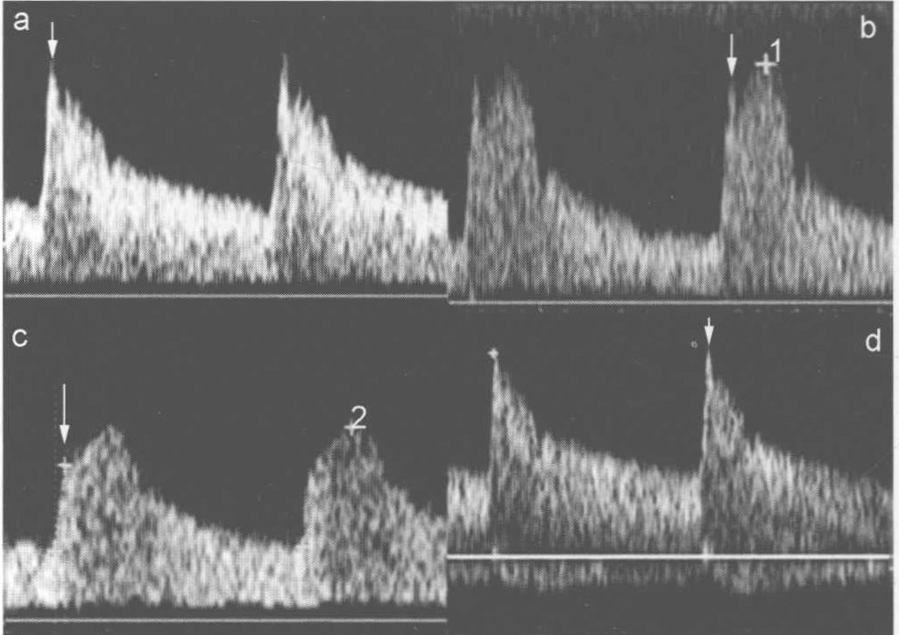
图9-22 不同类型正常频谱收缩早期加速度和加速时间测量
【扫查方法】在侧腰部肾脏冠状面上，段动脉和叶间动脉血流流向探头，流速测量较准确。当肾动脉主干狭窄时，叶间动脉已无射流成分，可作为下游的常规测量部位，如测量困难，可用段动脉代替。弓形动脉和小叶间动脉频谱测量欠可靠。对于肾内不同部位获取的频谱，以形态改变最异常者进行测量。频谱不稳定，难以获取3个连续同样的频谱时，最好选择最趋于正常的频谱测量。
【断面结构】 正常肾动脉频谱可分为4型：早期收缩峰高于晚期收缩峰（a）；早期收缩峰低于晚期收缩峰（b）；早期收缩峰缺失（c）；晚期收缩峰缺失（d）。
【测量方法】收缩早期加速度和加速时间的测量方法为从收缩期频谱起始处至收缩早期波峰的顶点处或收缩早期波峰消失处（图a～d中箭头所指处），但当这些特征不能辨认时，测量中止点则选择收缩期频谱最高点。
【临床价值】狭窄下游动脉频谱的收缩早期加速度和加速时间是诊断肾动脉狭窄的间接指标，当肾动脉主干显示困难时，正确测量下游动脉的收缩早期加速度和加速时间可间接判断肾动脉主干是否有异常。
（七） 副肾动脉（图9-23）
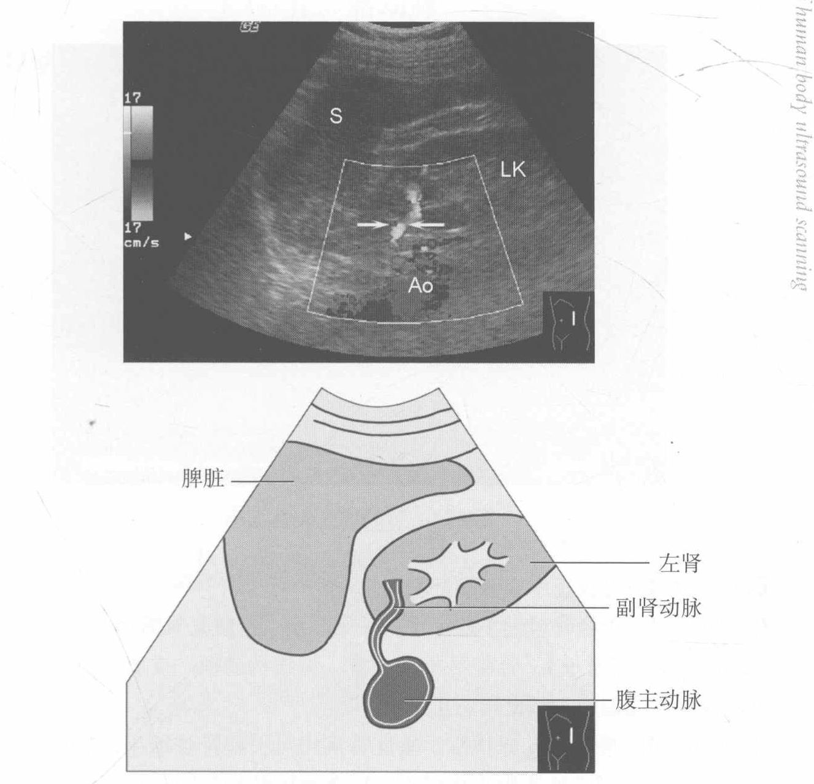
图9-23 副肾动脉彩色血流图（见彩图38）
【扫查方法】受检者侧卧位，侧腰部冠状切面上以肾为透声窗时较易显示副肾动脉。
【断面结构】副肾动脉长轴断面，腹主动脉横断面，肾脏长轴断面。
【测量方法】副肾动脉管径小于主肾动脉，频谱特点与肾动脉相似。
【临床价值】副肾动脉可起于肾动脉主干或腹主动脉，多在肾上腺、下极入肾，走行不固定，超声有时难以发现，检查时应注意肾上腺下极内侧有无入肾的动脉，副肾动脉出现率高达41.8%，左侧尤为多见，副肾动脉本身可出现狭窄并引起高血压，因此正确显示副肾动脉有助于明确诊断。主肾动脉和副肾动脉之一存在可引起血流动力学改变的狭窄时，可导致肾内不同动脉供血区的动脉分支频谱形态不同。
（八） 肾动脉先天性细小（图9-24）
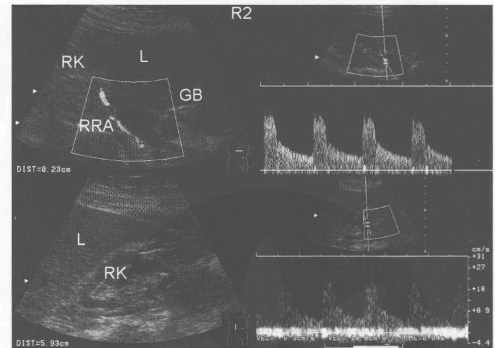
图9-24 肾动脉先天性细小
【扫查方法】经腹正中或侧腰部扫查均可。
【断面结构】管径普遍细小的肾动脉长轴断面，肾脏长轴断面。
【测量方法及正常值】肾脏可小于正常，但结构清晰，皮质回声正常。肾动脉流速正常或偏低，频谱形态正常。
【临床价值】慢性肾动脉狭窄、慢性肾病均可引起肾脏缩小，需与肾动脉先天性细小伴发的肾脏体积小相鉴别，后者肾脏结构和肾动脉频谱形态均正常，可与前者鉴别。
五、 髂动脉
髂动脉纵切面（图 9-25）
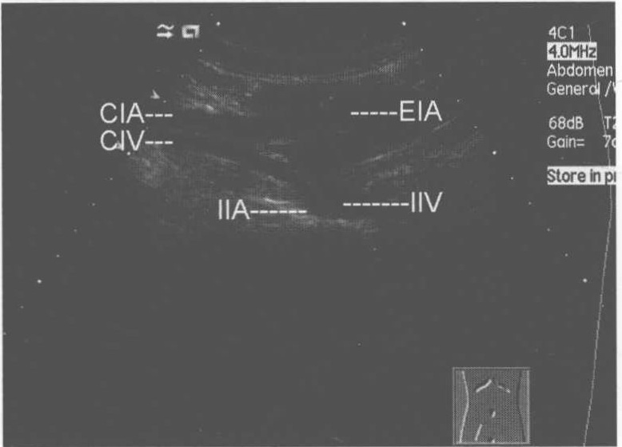
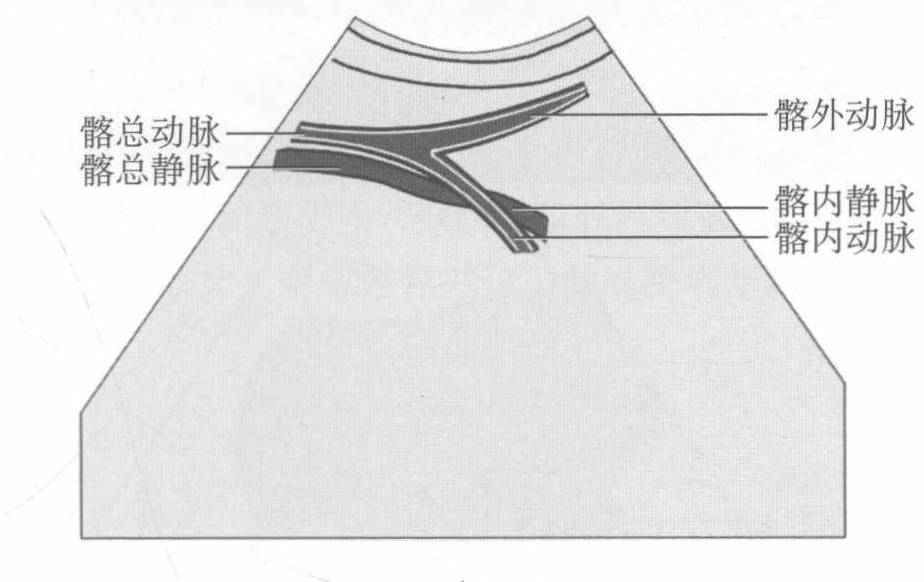
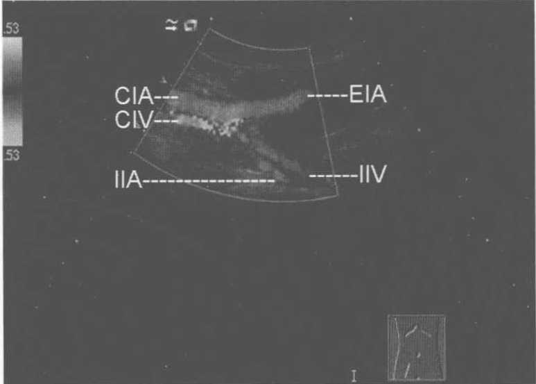
B(见彩图39)
图9-25 髂动脉纵切面
【探查方法】采用凸阵探头，探头频率：成年人尤其是肥胖者可选择3.5MHz，小儿及较瘦者可选择5MHz。最好能禁食8～12h。平卧位，探头斜置于左下或右下腹部。在彩超的引导下髂总动脉很容易显示。
【断面结构】髂总动脉纵断面，远端分支为髂内动脉及髂外动脉。
【测量方法】 髂总动脉及髂内外动脉内径，内膜厚度，多普勒血流速度。
【临床价值】可检测动脉粥样硬化斑块所致狭窄、大动脉纤维化、外压性狭窄等疾病。
第二节 静脉系统
一、 下腔静脉
（一） 剑突下下腔静脉纵断面（图9-26）
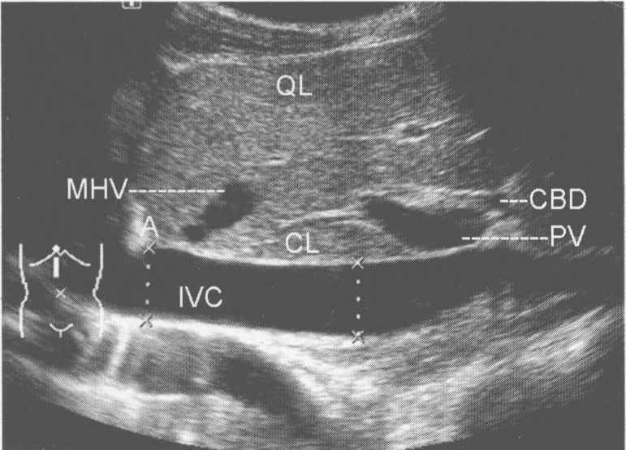
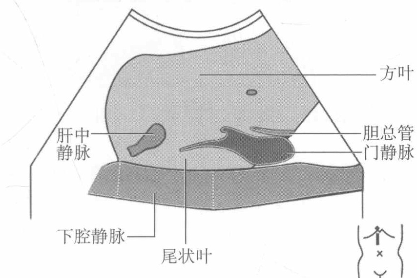
图9-26 剑突下下腔静脉纵断面
【探查方法】平卧位，探头竖置于剑突下中线指向右斜。
【断面结构】下腔静脉肝后段（相当长轴断面）、方叶及尾状叶纵断面。膈顶及第二肝门附近的肝组织。
【测量方法及正常值】 可测量下腔静脉右心房入口处及肝后段前后径。一般情况下，管径横径大于前后径，管径随呼吸运动周期而变化，并可见管壁搏动。近右心房处可见一生理性狭窄。吸气时前后径变窄，呼气时前后径增宽。上段：肾静脉开口以上至肝静脉开口以下，左右径2.0～2.4cm，前后径1.0～1.3cm；中段（肾动脉水平）左右径1.8～2.1cm，前后径0.9～1.2cm；下段：双肾静脉开口以下，左右径0.7～0.9cm，前后径0.9～1.1cm。
【临床意义】诊断下腔静脉狭窄、扩张、阻塞、占位性病变如布-加氏综合征、下腔静脉血栓、瘤栓等。显示下腔静脉和周围脏器的毗邻关系。下腔静脉属于腹膜后结构，出现在其周围的病变属于腹膜后病变。
（二） 剑突下下腔静脉横切面（图9-27）
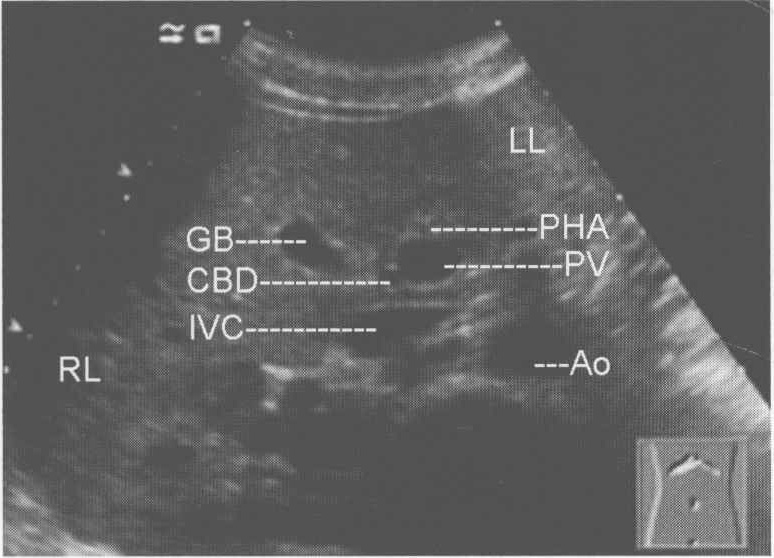
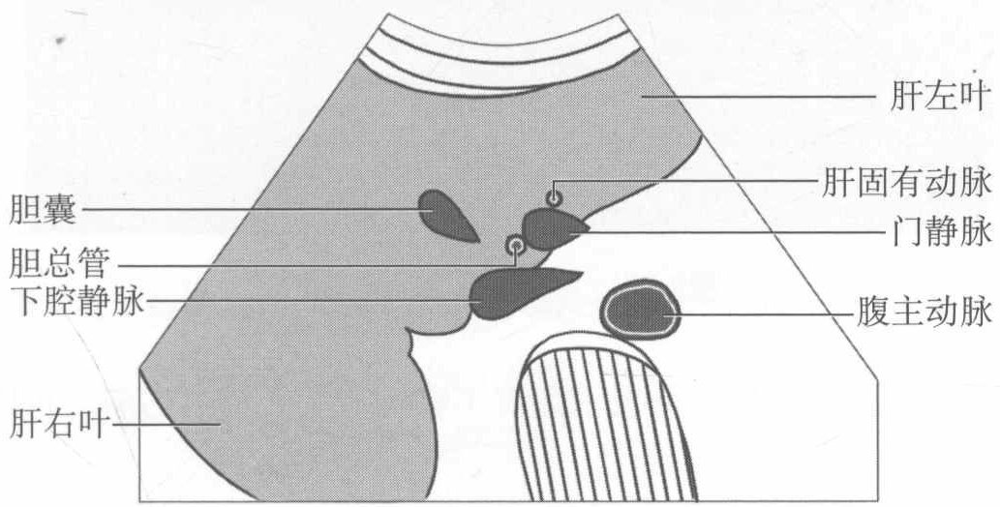
图9-27 剑突下下腔静脉横切面
【断面结构】下腔静脉肝后段横断面。腹主动脉、门静脉、肝动脉及胆总管的横断面，肝脏斜断面。
【探查方法】平卧位，探头横置于剑突下中线稍向右斜。
【测量方法】 可测量该段下腔静脉横径及前后径，一般情况下，管腔横径大于前后径。
【临床意义】与下腔静脉纵切面相结合，诊断下腔静脉本身及相邻脏器疾病。
（三） 下腔静脉血流频谱（图9-28）
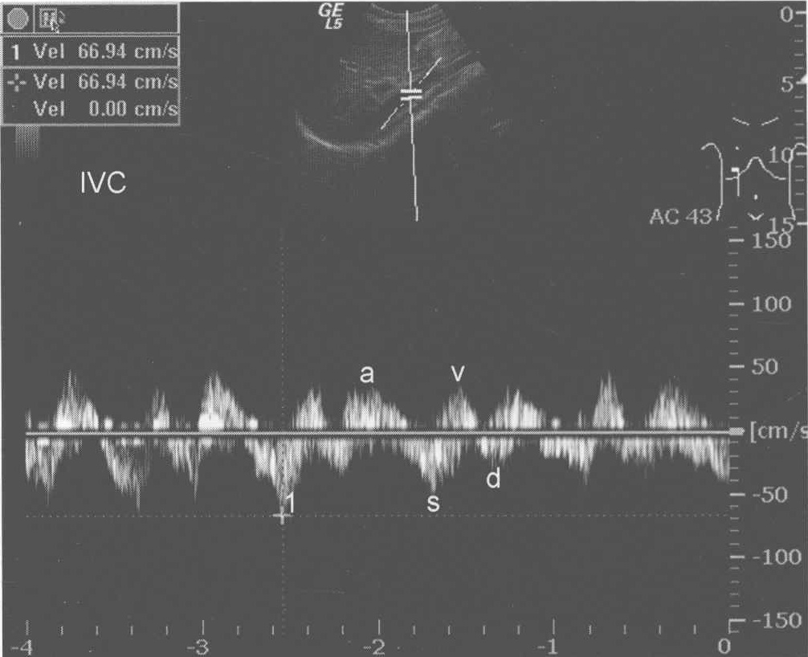
图9-28 下腔静脉血流频谱
【探查方法】平卧位，探头竖置于剑突下中线位置，稍向右斜，可以通过肝脏做声窗。
【断面结构】下腔静脉近心段血流频谱呈三相型或四相型。s波：心室收缩期，右心房容积扩大，压力降低，血液从下腔静脉流入右心房。v波：等容舒张期，右心房压力持续增高，血流反流入下腔静脉；d波：舒张期三尖瓣开放，右心房压力低，下腔静脉血流入右心房。a波：右心房收缩，血液倒流入下腔静脉。下腔静脉远心段受心脏舒缩的影响很小，频谱表现为连续前向血流，波幅变化较小。
【测量方法】测量峰值血流速度，判断血流方向是否正常。
【临床意义】诊断各种下腔静脉狭窄、扩张、阻塞、占位性病变，狭窄段血流可呈持续单向高速湍流波形；右心衰竭可使下腔静脉内径增宽，期相性波动幅度减弱；合并三尖瓣关闭不全时，右心室收缩时可出现反向的s波。肝硬化可使期相性波动幅度减弱。
二、 肠系膜上静脉
（一） 肠系膜上静脉横切面（图9-29）
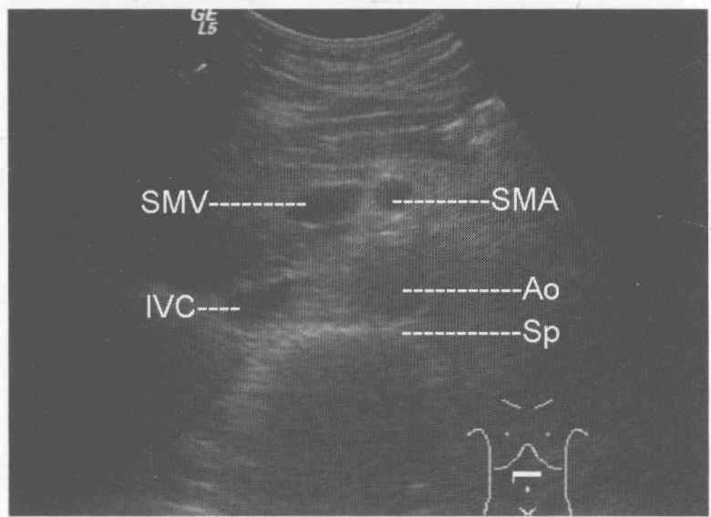
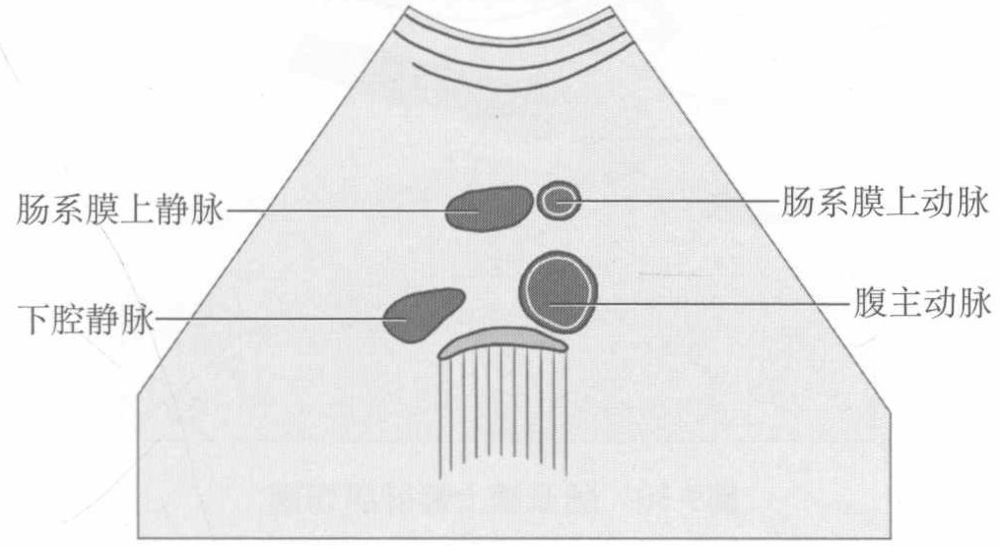
图9-29 肠系膜上静脉横切面
【扫查方法】一般检查前应禁食8h以上，受检者仰卧位，探头横置于剑突下，显示胰腺横断面后，向下扫查，在胰腺后方观察。腹胀、肥胖患者检查时需适当加压。
【断面结构】肠系膜上动、静脉、腹主动脉及下腔静脉横断面，胰腺横断面。
【测量方法】在此断面测肠系膜上静脉横径及前后径。加压后肠系膜上静脉管腔可压瘪。
【临床价值】此切面有利于定位肠系膜上静脉，在此基础上进行肠系膜上静脉的长轴扫查。肠系膜上静脉血栓形成时静脉管腔增宽，横切面加压后管腔不能压瘪。
（二） 肠系膜上静脉纵切面（图9-30）
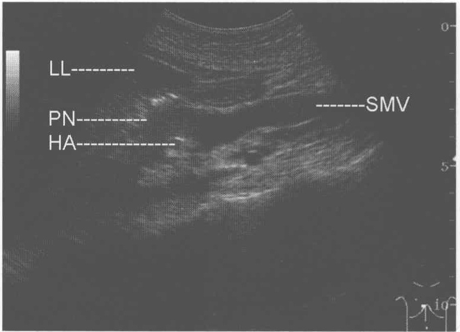
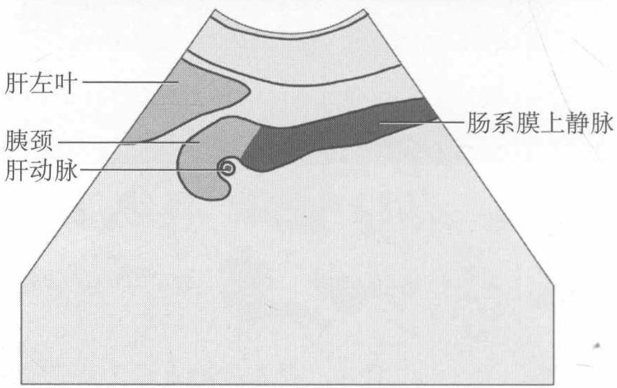
图9-30 肠系膜上静脉纵切面
【扫查方法】一般检查前应禁食8h以上，受检者仰卧位，探头竖置于剑突下，显示胰腺横断面后，向下扫查，在胰腺后方观察，显示脾静脉与肠系膜上静脉汇合处或肠系膜上静脉横切面后，旋转探头，显示静脉长轴切面。腹胀、肥胖患者检查时需适当加压。
【断面结构】肠系膜上静脉纵断面，胰颈纵断面，肝动脉横断面。
【测量方法】 在此断面上肠系膜上静脉为带状无回声，自上至下管径逐渐减小，可在此断面测量静脉前后径，其值一般小于0.9cm。应同时观察血流方向和管腔充盈情况，测量静脉流速，正常时肠系膜上静脉内血流充盈好，为向肝血流，频谱为单相连续性频谱，与门静脉频谱相似。
【临床价值】观察肠系膜上静脉管腔有无狭窄、闭塞或血栓形成。门静脉高压时肠系膜上静脉有可能血流反向。血栓形成时静脉前后径明显增宽，无血流显示，横切面加压后管腔不能压瘪。肠系膜上静脉远段常由于垂直于声束，难以显示血流信号，检查时应注意调整探头角度，有助于该段血流的显示，避免误诊为栓塞。
三、 肾静脉
（一） 上腹部偏左侧横切面显示左肾静脉长轴（图9-31）
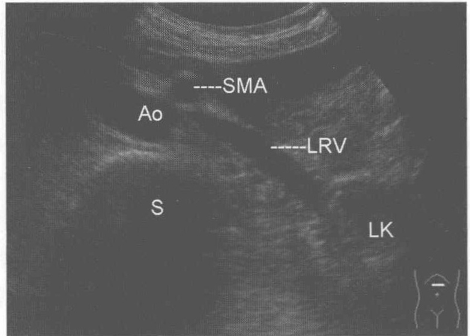
A. 偏左侧横切面
B. 正中横切面
图9-31 上腹部横切面显示左肾静脉长轴
【扫查方法】与腹正中横切面显示肾动脉方法相似，肾静脉位于肾动脉前方，二者位置较为固定，在探头头侧或尾侧加压可使左肾静脉二维图像及血流显示更清晰。
【断面结构】腹主动脉横切面，下腔静脉横切面，左肾静脉主干，肠系膜上动脉，有时可显示左肾动脉。腹正中横切面有利于显示左肾静脉近心段及其与下腔静脉的连接，正中偏左侧横切面有利于显示左肾静脉远心段长轴及其内部血流充盈情况。
【测量方法及正常值】左肾静脉位于腹主动脉和肠系膜上动脉之间的部分内径较小，位于腹主动脉左侧的部分，管径在成年人多达1cm以上。肾静脉血流内为层流，频谱为连续性平坦波形，左肾静脉在肠系膜上动脉与腹主动脉夹角中的一段由于受压后管径变小，流速常增快，腹主动脉左侧段流速较低。
【临床价值】 肾静脉主干血栓或瘤栓形成时肾静脉内为低回声，管腔增宽，无血流信号显示，血栓或瘤栓均有可能延伸入下腔静脉内。如仅为管腔部分栓塞，可观察到病变段血流充盈缺损。仰卧位左肾静脉狭窄远心端扩张部位内径与腹主动脉和肠系膜上动脉之间的狭窄部位内径的比值 ≥3，或脊柱后伸位15～20min后，该比值 ≥4，同时狭窄段流速增快而扩张段流速减低，可考虑诊断“胡桃夹”现象。
（二） 右肋缘下横切面显示右肾静脉（图9-32）
图9-32 右肋缘下横切面显示右肾静脉彩色血流图（见彩图40）
【扫查方法】检查方法与右肋缘下横切面显示右肾动脉方法相似，右肾静脉位于右肾动脉前方，在探头头侧加压可使右肾静脉二维图像及血流显示更清晰。
【断面结构】腹主动脉横切面，下腔静脉横切面，右肾静脉主干，右肾，有时可显示右肾动脉。
【测量方法及正常值】右肾静脉内径约1cm，频谱受下腔静脉扑动和呼吸影响而有波动。
【临床价值】 主要观察是否有部分或完全性栓塞。肾静脉主干血栓或瘤栓形成时肾静脉内为低回声，管腔增宽，无血流信号显示，血栓或瘤栓均有可能延伸入下腔静脉内。如仅为管腔部分栓塞，可观察到病变段血流充盈缺损。
四、 髂静脉
（一） 髂静脉纵切面二维声像图（图9-33）
图9-33 髂静脉纵切面二维声像图
（二） 髂静脉纵切面彩色血流图（图9-34）
图9-34 髂静脉纵切面彩色血流图
【扫查方法】与髂动脉扫查方法相似，髂静脉与同名动脉伴行，位置较固定。
【断面结构】髂总静脉纵断面，远端分支为髂内静脉及髂外静脉。
【测量方法】 可测量髂总静脉及髂内、外静脉内径，观察血流方向及充盈情况，测量血流速度。髂内静脉位置常较深，管壁显示不清，此时难以测量内径。
【临床价值】可诊断血栓形成、外压性狭窄等。下肢静脉血栓性病变时，一般应向上追踪观察髂外及髂总静脉。髂总静脉或其近心段静脉梗阻时，髂内、外静脉均有可能血流反向并经侧支血管回流。
五、 肝静脉
（一） 经右肋缘下三支肝静脉长轴切面图（图9-35）
图9-35 右肋缘下三支肝静脉及下腔静脉切面图
（二） 肝静脉血流频谱（9-36）
图9-36 肝静脉多普勒血流频谱
【探查方法】 空腹 8～12h，平卧位，探头置于剑突下中线右侧，右声束指向右后上方。多普勒取样容积置于肝静脉中央，校正角度和血管平行。
【断面结构】 显示第二肝门下腔静脉横断面，三支肝静脉汇入下腔静脉的斜断面。肝静脉的走行方向由肝脏周边向肝后上方第二肝门处下腔静脉内汇流，所以在经右肋缘下或剑突下探查频谱主要为负向波。呈两负一正三相波或两负两正四相波。
【测量方法及正常值】 测量三支肝静脉内径。最好在距汇入下腔静脉1～2cm处测量。标尺置于两侧管壁上。肝左静脉内径0.5～0.9cm，肝中静脉内径0.5～0.9cm，肝右静脉内径0.4～0.9cm。测肝静脉负向波最大血流速度，正常值报道较少，为 28.45±9.75cm/s。
【临床价值】①诊断肝静脉病变如狭窄、扩张或栓子、外压性移位或狭窄如布-加氏综合征；②一切影响肝脏实质硬度改变的疾病均可引起肝静脉频谱的异常，如肝硬化、重度脂肪肝；③一切影响右心房压力的疾病如右心衰竭，均可引起肝静脉频谱的异常；④三尖瓣反流可引起肝静脉频谱的异常。
（徐钟慧）